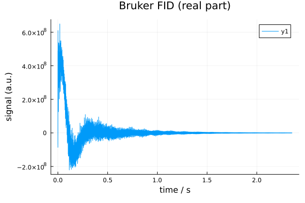
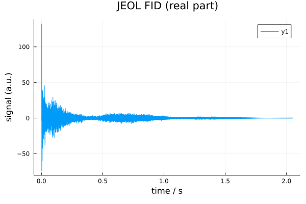

Loading NMR Data
NMRflux.jl separates vendor specific file parsing from the common data representation used by the rest of the framework. The NMRflux.FileIO submodule holds the low level vendor readers. Each one returns the time domain data together with the headers and parameter records the file carries, in whatever shape the format dictates, so the return values differ from vendor to vendor. The high level NMRflux.load interface sits on top of them and converts a supported dataset into a single SpectData representation that the processing tools understand. The package also ships small example datasets, and the runnable examples on this page all use one of them.
1. Supported vendor formats
| Vendor | Files read | Selector |
|---|---|---|
| Bruker | fid, acqus | :Bruker |
| JEOL | .jdf | :JEOL |
| Magritek Spinsolve | data.1d, acqu.par | :Magritek |
| Varian/Agilent | fid, procpar | :Varian |
| Oxford Instruments | .dx, .jdx (JCAMP-DX) | :Oxford |
Agilent datasets use the :Varian selector.
The first argument of NMRflux.load is not the same kind of path for every vendor:
| Selector | What the path must point to |
|---|---|
:Bruker | the experiment directory holding acqus and fid, for example .../10 |
:JEOL | the .jdf file itself |
:Magritek | the directory holding acqu.par and data.1d |
:Varian | the directory holding procpar and fid |
:Oxford | the .dx or .jdx file, or a directory containing exactly one such file |
The Bruker, Magritek, Varian, and Oxford routes handle one dimensional data only. The Varian reader is deliberately strict: it multiplies the block count by the trace count and refuses anything other than a single trace, so arrayed and multidimensional Varian experiments are not silently truncated.
The JEOL reshaping code generalises to more than one dimension and reads the section layout from the file header. The two dimensional section ordering has not yet been checked against a real two dimensional JEOL dataset, so two dimensional JEOL loading is provisional. A mirrored indirect dimension after Fourier transformation is the symptom to watch for.
2. Example datasets
The example data live in NMRflux.Examples.Data. Each entry holds the contents of that dataset's example.toml, plus two keys added when the module loads: "path", the dataset directory, and "files", the full paths of everything in that directory apart from the TOML file itself.
using NMRflux
using NMRflux.Examples
data_bruker = NMRflux.Examples.Data["HCC cell culture media spectra"]
keys(data_bruker)KeySet for a Dict{String, Any} with 9 entries. Keys:
"name"
"format"
"author"
"files"
"reference"
"doi"
"tags"
"description"
"path"using NMRflux
using NMRflux.Examples
data_jeol = NMRflux.Examples.Data["Spheroid culture medium"]
keys(data_jeol)KeySet for a Dict{String, Any} with 9 entries. Keys:
"name"
"format"
"author"
"files"
"reference"
"doi"
"tags"
"description"
"path"Use keys(NMRflux.Examples.Data) to list everything that ships with the package.
3. Bruker data through the high level interface
For most work, load Bruker data with NMRflux.load. It returns the acquisition parameters and a time domain SpectData object.
params_bruker, data_td_bruker =
NMRflux.load(joinpath(data_bruker["path"], "10"), :Bruker)
(params_bruker["SW_h"], size(data_td_bruker.dat))(13888.8888888889, (32693,))The Bruker path parses acqus, reads the interleaved fid, keeps the FID from index GRPDLY onwards to remove the digital filter group delay, and builds the time coordinate from the sweep width SW_h.
using Plots: plot, savefig
plot(coords(data_td_bruker, 1), real.(data_td_bruker.dat);
xlabel = "time / s",
ylabel = "signal (a.u.)",
title = "Bruker FID (real part)"
)
coords(S, k) is the public accessor for the coordinate of dimension k, and it is equivalent to reading S.coord[k] directly.
4. Bruker data through FileIO
The underlying readers are available when you need the raw header values or want to control the conversion yourself.
fid_bruker = NMRflux.FileIO.readBrukerFID(joinpath(data_bruker["path"], "10", "fid"))
params_raw = NMRflux.FileIO.readBrukerParameterFile(joinpath(data_bruker["path"], "10", "acqus"))
length(fid_bruker)32768readBrukerFID defaults to format=Float64, which is correct for TopSpin 4.0 and later. Data written by TopSpin 2.0 needs format=Int32. Building the time coordinate from SW_h gives a SpectData object equivalent to the one returned by NMRflux.load, with one difference: the low level route returns the full FID, including the group delay points that the high level route removes.
dwell = 1 / params_raw["SW_h"]
time_axis = range(0.0, step=dwell, length=length(fid_bruker))
fid_raw_bruker = SpectData(fid_bruker, (time_axis,))
(dwell, size(fid_raw_bruker.dat), size(data_td_bruker.dat))(7.199999999999995e-5, (32768,), (32693,))The two objects differ in length by the number of group delay points that NMRflux.load discards.
5. JEOL data through the high level interface
A JEOL .jdf file keeps the header, the acquisition parameters, and the binary data together in a single file, so NMRflux.load takes the file path directly.
using Plots: plot, savefig
jdf_file = joinpath(data_jeol["path"], "yp-5-fu-2.5-100.jdf")
params_jeol, data_td_jeol = NMRflux.load(jdf_file, :JEOL)
plot(coords(data_td_jeol, 1), real.(data_td_jeol.dat);
xlabel = "time / s",
ylabel = "signal (a.u.)",
title = "JEOL FID (real part)"
)
The loader reads the header and parameter blocks, splits the flat data buffer into its real and imaginary sections, combines them using the JEOL conjugate convention, and builds each coordinate axis from the stored dataAxisStart, dataAxisStop, and dataPoints entries.
6. JEOL data through FileIO
readJEOL takes an open stream and returns the header, the parameter dictionary, and the flat data vector. Passing it to open as below hands it the stream and closes the file afterwards.
header_jeol, params_jeol, raw_jeol = open(NMRflux.FileIO.readJEOL, jdf_file)
(header_jeol["dims"], header_jeol["dataAxisType"][1], length(raw_jeol))(1, "Complex", 46144)For a one dimensional complex JEOL FID the buffer holds all real values followed by all imaginary values, and the imaginary section carries a factor of -im:
n = length(raw_jeol)
cdata = raw_jeol[1:(n >> 1)] - im * raw_jeol[((n >> 1) + 1):end]
length(cdata)23072Acquisition parameters are stored as tuples of the form (scaler, units, value), so the numerical value sits in the third slot. The same dictionary also carries four block header entries, parameterSize, lowIndex, highIndex and totalSize, which are plain integers.
dwell = 1.0 / params_jeol["X_SWEEP"][3]
time_axis = range(0.0, step=dwell, length=length(cdata))
fid_raw_jeol = SpectData(cdata, (time_axis,))
size(fid_raw_jeol.dat)(23072,)The first element of a JEOL parameter tuple is a decimal scaler that the reader stores but never applies, so any parameter used quantitatively needs it applied by hand. reshapeJEOL sidesteps the question: it builds its axes from the header, not from the parameter block, which makes the high level route the safer one for multidimensional data.
7. The remaining vendors
Magritek Spinsolve, Varian/Agilent, and Oxford Instruments data follow the same pattern:
params_magritek, data_magritek = NMRflux.load(magritek_dir, :Magritek)
params_varian, data_varian = NMRflux.load(varian_dir, :Varian)
params_oxford, data_oxford = NMRflux.load(oxford_file, :Oxford)For Magritek data the time coordinate comes from the
bandwidthfield ofacqu.par, whichNMRflux.loadconverts from kHz to Hz.readMagritekFIDalso returns the time axis stored in the file. That axis is a useful cross check, but it is not the one that ends up in theSpectDataobject.Varian data works the same way, with the coordinate taken from the
swfield ofprocpar. HereNMRflux.loadalso comparesnpagainst the number of points actually present in the binary file and warns when the two disagree.Oxford is the exception. The JCAMP-DX reader reconstructs the time axis from the
FIRSTandLASTrecords, with the unit read fromUNITSorXUNITS, andNMRflux.loaduses that axis directly.
Every route on this page ends with the same object, whichever layer you used to get there. Working with SpectData covers what you can do with it.